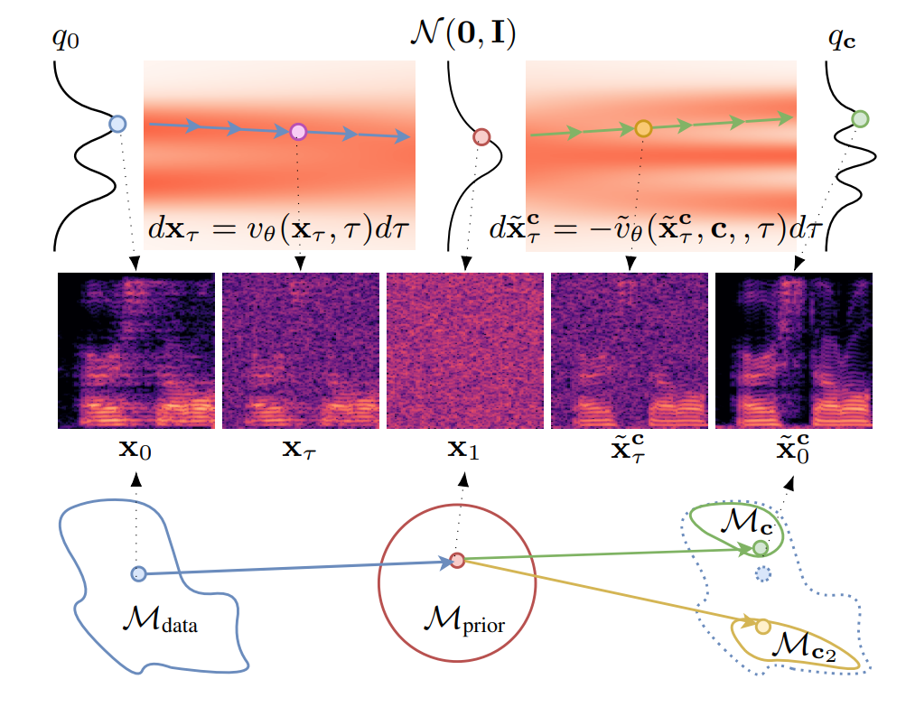

Abstract
Audio domain transfer is the process of modifying audio signals to match characteristics of a different domain, while retaining the original content. This paper investigates the potential of Gaussian Flow Bridges, an emerging approach in generative modeling, for this problem. The presented framework addresses the transport problem across different distributions of audio signals through the implementation of a series of two deterministic probability flows. The proposed framework facilitates manipulation of the target distribution properties through a continuous control variable, which defines a certain aspect of the target domain. Notably, this approach does not rely on paired examples for training. To address identified challenges on maintaining the speech content consistent, we recommend a training strategy that incorporates chunk-based minibatch Optimal Transport couplings of data samples and noise. Comparing our unsupervised method with established baselines, we find competitive performance in tasks of reverberation and distortion manipulation. Despite encoutering limitations, the intriguing results obtained in this study underscore potential for further exploration.

Figure 1:
(Top) Illustration of a GFB in one-dimensional space. (Middle) A sequential display of spectrograms, showcasing the stages of audio signal transformation. (Bottom) Geometrical interpretation highlighting the mapping of data points through encoding and decoding within a Gaussian space.